Lecciones de circuitos eléctricos - Volumen II
Capítulo 4
REACTANCIA E IMPEDANCIA -- CAPACITIVA
- AC resistor circuits
- AC capacitor circuits
- Series resistor-capacitor circuits
- Parallel resistor-capacitor circuits
- Capacitor quirks
- Contributors
AC resistor circuits

Circuito de CA resistivo puro: el voltaje y la corriente están en fase.
Si tuviéramos que trazar la corriente y el voltaje para un circuito de CA muy simple que consta de una fuente y una resistencia, (Figura above) se vería así: (Figura below)
{kind=link}
{kind=link}

Tensión y corriente “en fase” para circuito resistivo.
Debido a que la resistencia permite una cantidad de corriente directamente proporcional al voltaje a través de ella en todos los períodos de tiempo, la forma de onda de la corriente está exactamente en fase con la forma de onda del voltaje. Podemos observar cualquier punto en el tiempo a lo largo del eje horizontal del gráfico y comparar esos valores de corriente y voltaje entre sí (cualquier mirada “instantánea” a los valores de una onda se conoce comovalores instantáneos, es decir, los valores en eseinstantea tiempo). Cuando el valor instantáneo del voltaje es cero, la corriente instantánea a través de la resistencia también es cero. Del mismo modo, en el momento en que el voltaje a través de la resistencia está en su pico positivo, la corriente a través de la resistencia también está en su pico positivo, y así sucesivamente. En cualquier momento dado a lo largo de las ondas, la Ley de Ohm es válida para los valores instantáneos de voltaje y corriente.
También podemos calcular la potencia disipada por esta resistencia y trazar esos valores en el mismo gráfico: (Figura below)
{kind=link}

La potencia de CA instantánea en un circuito resistivo siempre es positiva.
Tenga en cuenta que la potencia nunca es un valor negativo. Cuando la corriente es positiva (por encima de la línea), el voltaje también es positivo, lo que da como resultado una potencia (p=ie) de valor positivo. Por el contrario, cuando la corriente es negativa (debajo de la línea), el voltaje también es negativo, lo que resulta en un valor positivo de potencia (un número negativo multiplicado por un número negativo es igual a un número positivo). Esta "polaridad" constante de potencia nos dice que la resistencia siempre está disipando potencia, tomándola de la fuente y liberándola en forma de energía térmica. Ya sea que la corriente sea positiva o negativa, una resistencia aún disipa energía.
AC capacitor circuits
Los condensadores no se comportan igual que las resistencias. Mientras que las resistencias permiten un flujo de electrones a través de ellas directamente proporcional a la caída de voltaje, los capacitores se oponen.cambiosen voltaje extrayendo o suministrando corriente a medida que se cargan o descargan al nuevo nivel de voltaje. El flujo de electrones "a través" de un condensador es directamente proporcional a latasa de cambiode voltaje a través del capacitor. Esta oposición al cambio de voltaje es otra forma deresistencia reactiva, pero uno que es precisamente opuesto al que presentan los inductores.
Expresada matemáticamente, la relación entre la corriente “a través” del capacitor y la tasa de cambio de voltaje a través del capacitor es la siguiente:
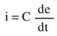
la expresiónde/dtes uno de cálculo, es decir, la tasa de cambio del voltaje instantáneo (e) a lo largo del tiempo, en voltios por segundo. La capacitancia (C) está en faradios y la corriente instantánea (i), por supuesto, está en amperios. A veces encontrará la tasa de cambio instantáneo de voltaje a lo largo del tiempo expresada como dv/dt en lugar de de/dt: use la letra minúscula “v” en lugar o “e” para representar el voltaje, pero significa exactamente lo mismo. Para mostrar lo que sucede con la corriente alterna, analicemos un circuito capacitor simple: (Figura below)
{kind=link}
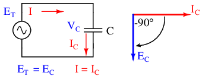
Circuito capacitivo puro: el voltaje del capacitor retrasa la corriente del capacitor en 90o
Si tuviéramos que trazar la corriente y el voltaje para este circuito muy simple, se vería así: (Figura below)
{kind=link}
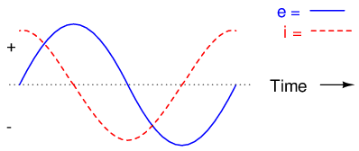
Formas de onda de circuito capacitivo puro.
Recuerde, la corriente a través de un capacitor es una reacción contra lacambiaren voltaje a través de él. Por lo tanto, la corriente instantánea es cero siempre que el voltaje instantáneo está en un pico (cambio cero, o pendiente de nivel, en la onda sinusoidal de voltaje), y la corriente instantánea está en un pico dondequiera que el voltaje instantáneo esté en su cambio máximo (los puntos de pendiente más pronunciada en la onda de voltaje, donde cruza la línea cero). Esto da como resultado una onda de voltaje de -90odesfasado con la ola actual. Mirando el gráfico, la onda de corriente parece tener una “ventaja” sobre la onda de voltaje; la corriente “se adelanta” al voltaje, y el voltaje “se queda atrás” de la corriente. (Cifra below)
{kind=link}
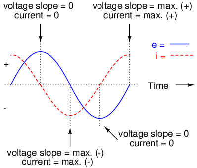
El voltaje retrasa la corriente en 90oen un circuito capacitivo puro.
Como habrás adivinado, la misma onda de potencia inusual que vimos con el circuito inductor simple también está presente en el circuito capacitor simple: (Figura below)
{kind=link}
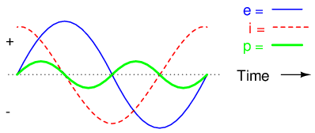
En un circuito capacitivo puro, la potencia instantánea puede ser positiva o negativa.
Al igual que con el circuito inductor simple, el cambio de fase de 90 grados entre voltaje y corriente da como resultado una onda de potencia que alterna igualmente entre positivo y negativo. Esto significa que un capacitor no disipa energía ya que reacciona contra los cambios de voltaje; simplemente absorbe y libera poder, alternativamente.
La oposición de un capacitor al cambio de voltaje se traduce en una oposición al voltaje alterno en general, que por definición siempre cambia en magnitud y dirección instantáneas. Para cualquier magnitud dada de voltaje CA a una frecuencia determinada, un capacitor de tamaño dado “conducirá” una cierta magnitud de corriente CA. Así como la corriente a través de una resistencia es función del voltaje a través de la resistencia y la resistencia ofrecida por la resistencia, la corriente CA a través de un capacitor es función del voltaje CA a través de él, y laresistencia reactivaofrecido por el condensador. Al igual que con los inductores, la reactancia de un capacitor se expresa en ohmios y se simboliza con la letra X (o XCpara ser más específico).
Dado que los condensadores “conducen” corriente en proporción a la tasa de cambio de voltaje, pasarán más corriente para voltajes que cambian más rápido (ya que se cargan y descargan a los mismos picos de voltaje en menos tiempo) y menos corriente para voltajes que cambian más lentamente. Lo que esto significa es que la reactancia en ohmios para cualquier capacitor esinversamenteproporcional a la frecuencia de la corriente alterna. (Mesa below)
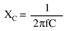
Reactance of a 100 uF capacitor:
| Frecuencia (Hercios) | Reactancia (Ohmios) |
|---|---|
| 60 | 26.5258 |
| 120 | 13.2629 |
| 2500 | 0.6366 |
Tenga en cuenta que la relación de la reactancia capacitiva con la frecuencia es exactamente opuesta a la de la reactancia inductiva. La reactancia capacitiva (en ohmios) disminuye al aumentar la frecuencia de CA. Por el contrario, la reactancia inductiva (en ohmios) aumenta al aumentar la frecuencia de CA. Los inductores se oponen a los cambios más rápidos de las corrientes produciendo mayores caídas de voltaje; Los condensadores se oponen a caídas de voltaje que cambian más rápidamente al permitir corrientes mayores.
Al igual que con los inductores, el término 2πf de la ecuación de reactancia se puede reemplazar por la letra griega minúscula Omega (ω), que se conoce comovelocidad angulardel circuito de CA. Por tanto, la ecuación XC= 1/(2πfC) también podría escribirse como XC= 1/(ωC), con ω expresado en unidades deradianes por segundo.
La corriente alterna en un circuito capacitivo simple es igual al voltaje (en voltios) dividido por la reactancia capacitiva (en ohmios), del mismo modo que la corriente alterna o continua en un circuito resistivo simple es igual al voltaje (en voltios) dividido por la resistencia (en ohmios). El siguiente circuito ilustra esta relación matemática con un ejemplo: (Figura below)
{kind=link}
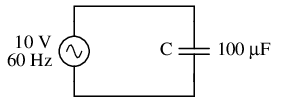
Reactancia capacitiva.
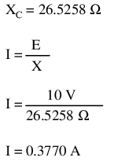
Sin embargo, debemos tener en cuenta que aquí el voltaje y la corriente no están en fase. Como se mostró anteriormente, la corriente tiene un cambio de fase de +90ocon respecto al voltaje. Si representamos matemáticamente estos ángulos de fase de voltaje y corriente, podemos calcular el ángulo de fase de la oposición reactiva del capacitor a la corriente.
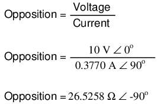
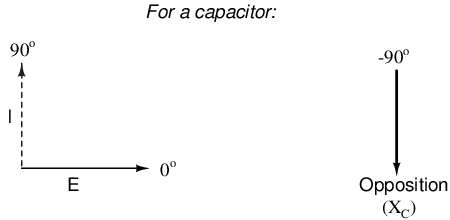
El voltaje retrasa la corriente en 90oen un condensador.
Matemáticamente, decimos que el ángulo de fase de la oposición de un capacitor a la corriente es -90o, lo que significa que la oposición de un condensador a la corriente es una cantidad imaginaria negativa. (Cifra above) Este ángulo de fase de oposición reactiva a la corriente adquiere una importancia crítica en el análisis de circuitos, especialmente para circuitos de CA complejos donde interactúan la reactancia y la resistencia. Será beneficioso representaranyoposición del componente a la corriente en términos de números complejos, y no solo cantidades escalares de resistencia y reactancia.
{kind=link}
- REVISAR:
- Reactancia capacitivaes la oposición que ofrece un condensador a la corriente alterna debido a su almacenamiento desfasado y liberación de energía en su campo eléctrico. La reactancia está simbolizada por la letra mayúscula "X" y se mide en ohmios al igual que la resistencia (R).
- La reactancia capacitiva se puede calcular usando esta fórmula: XC= 1/(2πfC)
- Reactancia capacitivadisminuyecon frecuencia cada vez mayor. En otras palabras, cuanto mayor es la frecuencia, menos se opone (más “conduce”) al flujo CA de electrones.
Series resistor-capacitor circuits
En la última sección, aprendimos lo que sucedería en circuitos CA simples de solo resistencia y solo de capacitor. Ahora combinaremos los dos componentes en forma de serie e investigaremos los efectos. (Cifra below)
{kind=link}
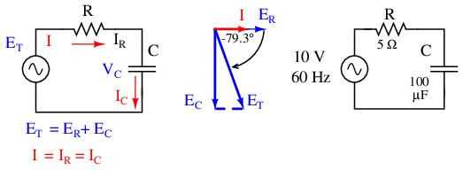
Circuito de condensadores en serie: el voltaje retrasa la corriente en 0oa 90o.
La resistencia ofrecerá 5 Ω de resistencia a la corriente CA independientemente de la frecuencia, mientras que el condensador ofrecerá 26,5258 Ω de reactancia a la corriente CA a 60 Hz. Debido a que la resistencia del resistor es un número real (5 Ω ∠ 0o, o 5 + j0 Ω), y la reactancia del capacitor es un número imaginario (26.5258 Ω ∠ -90o, o 0 - j26.5258 Ω), el efecto combinado de los dos componentes será una oposición a la corriente igual a la suma compleja de los dos números. El término para esta compleja oposición a la corriente esimpedancia, su símbolo es Z, y también se expresa en la unidad de ohmios, al igual que la resistencia y la reactancia. En el ejemplo anterior, la impedancia total del circuito es:
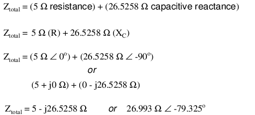
La impedancia está relacionada con el voltaje y la corriente tal como era de esperar, de manera similar a la resistencia en la Ley de Ohm:

De hecho, ésta es una forma mucho más completa de la Ley de Ohm que la que se enseñaba en la electrónica de CC (E=IR), del mismo modo que la impedancia es una expresión mucho más completa de oposición al flujo de electrones que la simple resistencia. Cualquier resistencia y cualquier reactancia, por separado o en combinación (serie/paralelo), pueden y deben representarse como una única impedancia.
Para calcular la corriente en el circuito anterior, primero debemos dar una referencia del ángulo de fase para la fuente de voltaje, que generalmente se supone que es cero. (Los ángulos de fase de la impedancia resistiva y capacitiva sonsiempre 0oy -90o, respectivamente, independientemente de los ángulos de fase dados para voltaje o corriente).
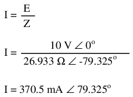
Al igual que en el circuito puramente capacitivo, la onda de corriente adelanta a la onda de voltaje (de la fuente), aunque esta vez la diferencia es 79,325.oen lugar de un 90 completoo. (Cifra below)
{kind=link}
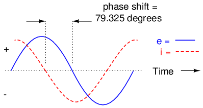
El voltaje va por detrás de la corriente (la corriente adelanta al voltaje) en un circuito R-C en serie.
Como aprendimos en el capítulo sobre inductancia de CA, el método de “tabla” para organizar cantidades de circuitos es una herramienta muy útil para el análisis de CA al igual que lo es para el análisis de CC. Coloquemos las cifras conocidas para este circuito en serie en una tabla y continuemos el análisis usando esta herramienta:
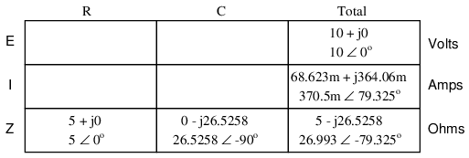
La corriente en un circuito en serie es compartida por igual por todos los componentes, por lo que las cifras colocadas en la columna "Total" para la corriente también se pueden distribuir a todas las demás columnas:
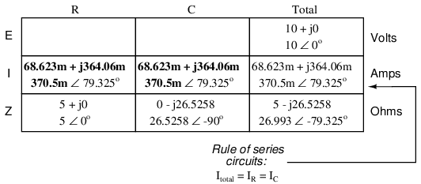
Continuando con nuestro análisis, podemos aplicar la Ley de Ohm (E=IR) verticalmente para determinar el voltaje entre la resistencia y el capacitor:
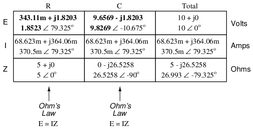
Observe cómo el voltaje a través de la resistencia tiene exactamente el mismo ángulo de fase que la corriente que la atraviesa, lo que nos indica que E e I están en fase (solo para la resistencia). El voltaje a través del capacitor tiene un ángulo de fase de -10.675o, exactamente 90o menosque el ángulo de fase de la corriente del circuito. Esto nos dice que el voltaje y la corriente del capacitor todavía son 90odesfasados entre sí.
Revisemos nuestros cálculos con SPICE: (Figura below)
{kind=link}
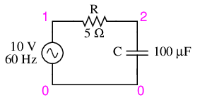
Circuito de especias: R-C.
ac r-c circuit v1 1 0 ac 10 sin r1 1 2 5 c1 2 0 100u .ac lin 1 60 60 .print ac v(1,2) v(2,0) i(v1) .print ac vp(1,2) vp(2,0) ip(v1) .end
freq v(1,2) v(2) i(v1) 6.000E+01 1.852E+00 9.827E+00 3.705E-01 freq vp(1,2) vp(2) ip(v1) 6.000E+01 7.933E+01 -1.067E+01 -1.007E+02
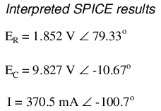
Una vez más, SPICE imprime de manera confusa el ángulo de fase actual en un valor igual al ángulo de fase real más 180o(o menos 180o). Sin embargo, es sencillo corregir esta cifra y comprobar si nuestro trabajo es correcto. En este caso, el -100,7oLa salida de SPICE para el ángulo de fase actual equivale a un positivo 79,3.o, que corresponde a nuestra cifra previamente calculada de 79,325o.
Nuevamente hay que enfatizar que las cifras calculadas correspondientes a mediciones de voltaje y corriente en la vida real son las que se muestran enpolar¡Forma, no forma rectangular! Por ejemplo, si realmente construyéramos este circuito de resistencia-condensador en serie y midiéramos el voltaje a través de la resistencia, nuestro voltímetro indicaría1.8523voltios, no 343,11 milivoltios (rectangular real) o 1,8203 voltios (rectangular imaginario). Los instrumentos reales conectados a circuitos reales proporcionan indicaciones correspondientes a la longitud del vector (magnitud) de las cifras calculadas. Si bien la forma rectangular de notación de números complejos es útil para realizar sumas y restas, es una forma de notación más abstracta que la polar, que es la única que tiene correspondencia directa con las medidas verdaderas.
La impedancia (Z) de un circuito R-C en serie se puede calcular, dada la resistencia (R) y la reactancia capacitiva (XC). Como E=IR, E=IXC, y E=IZ, la resistencia, la reactancia y la impedancia son proporcionales al voltaje, respectivamente. Por tanto, el diagrama fasor de tensión se puede sustituir por un diagrama de impedancia similar. (Cifra below)
{kind=link}
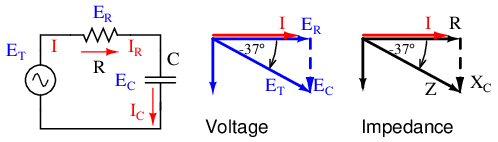
Serie: Diagrama fasorial de impedancia del circuito R-C.
Ejemplo:
Dado: una resistencia de 40 Ω en serie con un condensador de 88,42 microfaradios. Encuentre la impedancia a 60 hercios.
XC = 1/(2πfC) XC = 1/(2π·60·88.42×10-6) XC = 30 Ω Z = R - jXC Z = 40 - j30 |Z| = sqrt(402 + (-30)2) = 50 Ω ∠Z = arctangent(-30/40) = -36.87o Z = 40 - j30 = 50∠-36.87o
- REVISAR:
- Impedanciaes la medida total de oposición a la corriente eléctrica y es la suma compleja (vectorial) de la resistencia (“real”) y la reactancia (“imaginaria”).
- Las impedancias (Z) se gestionan igual que las resistencias (R) en el análisis de circuitos en serie: las impedancias en serie se suman para formar la impedancia total. ¡Solo asegúrese de realizar todos los cálculos en forma compleja (no escalar)! zTotal = Z1 + Z2+ . . . zn
- Tenga en cuenta que las impedancias siempre se suman en serie, independientemente del tipo de componentes que las componen. Es decir, la impedancia resistiva, la impedancia inductiva y la impedancia capacitiva deben tratarse matemáticamente de la misma manera.
- Una impedancia puramente resistiva siempre tendrá un ángulo de fase exactamente 0o (ZR= R Ω ∠ 0o).
- Una impedancia puramente capacitiva siempre tendrá un ángulo de fase de exactamente -90o (ZC = XCΩ ∠ -90o).
- Ley de Ohm para circuitos de CA: E = IZ ; Yo = E/Z; Z = E/I
- Cuando se mezclan resistencias y condensadores en circuitos, la impedancia total tendrá un ángulo de fase entre 0 yoy -90o.
- Los circuitos de CA en serie exhiben las mismas propiedades fundamentales que los circuitos de CC en serie: la corriente es uniforme en todo el circuito, las caídas de voltaje se suman para formar el voltaje total y las impedancias se suman para formar la impedancia total.
Parallel resistor-capacitor circuits
Usando los componentes del mismo valor en nuestro circuito de ejemplo en serie, los conectaremos en paralelo y veremos qué sucede: (Figura below)
{kind=link}
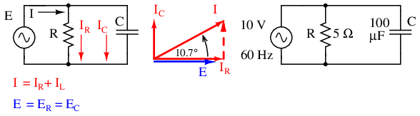
Circuito R-C en paralelo.
Debido a que la fuente de energía tiene la misma frecuencia que el circuito de ejemplo en serie, y la resistencia y el capacitor tienen los mismos valores de resistencia y capacitancia, respectivamente, también deben tener los mismos valores de impedancia. Entonces, podemos comenzar nuestra tabla de análisis con los mismos valores "dados":
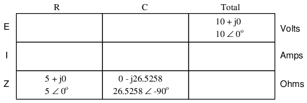
Al ser ahora un circuito paralelo, sabemos que el voltaje lo comparten equitativamente todos los componentes, por lo que podemos colocar la cifra del voltaje total (10 voltios ∠ 0o) en todas las columnas:
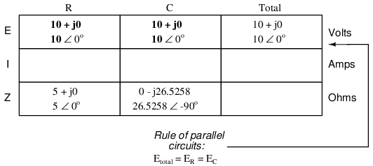
Ahora podemos aplicar la Ley de Ohm (I=E/Z) verticalmente a dos columnas de la tabla, calculando la corriente a través de la resistencia y la corriente a través del capacitor:
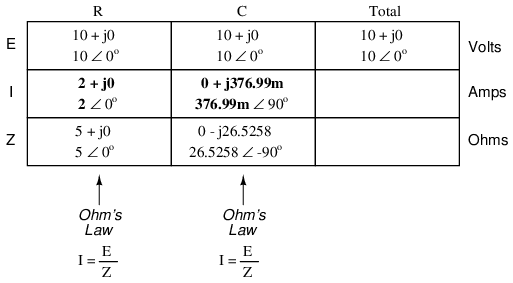
Al igual que con los circuitos de CC, las corrientes derivadas en un circuito de CA paralelo se suman para formar la corriente total (nuevamente la ley de corrientes de Kirchhoff):
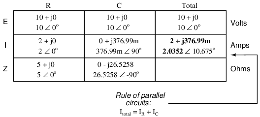
Finalmente, la impedancia total se puede calcular usando la Ley de Ohm (Z=E/I) verticalmente en la columna "Total". Como vimos en el capítulo sobre inductancia de CA, la impedancia en paralelo también se puede calcular utilizando una fórmula recíproca idéntica a la utilizada para calcular las resistencias en paralelo. Es digno de mención mencionar que esta regla de impedancia paralela es válida independientemente del tipo de impedancias colocadas en paralelo. En otras palabras, no importa si estamos calculando un circuito compuesto por resistencias en paralelo, inductores en paralelo, condensadores en paralelo o alguna combinación de los mismos: en forma de impedancias (Z), todos los términos son comunes y se pueden aplicar uniformemente a la misma fórmula. Una vez más, la fórmula de impedancia paralela se ve así:

El único inconveniente de utilizar esta ecuación es la gran cantidad de trabajo que se requiere para resolverla, especialmente sin la ayuda de una calculadora capaz de manipular cantidades complejas. Independientemente de cómo calculemos la impedancia total de nuestro circuito paralelo (ya sea la ley de Ohm o la fórmula recíproca), llegaremos a la misma cifra:
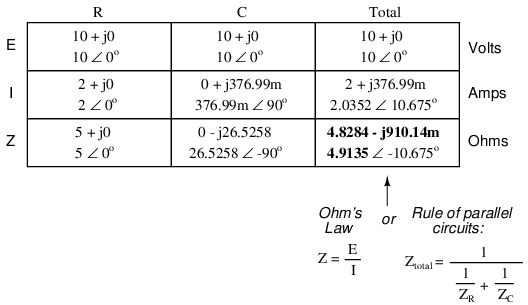
- REVISAR:
- Las impedancias (Z) se gestionan igual que las resistencias (R) en el análisis de circuitos en paralelo: las impedancias en paralelo disminuyen para formar la impedancia total, utilizando la fórmula recíproca. ¡Solo asegúrese de realizar todos los cálculos en forma compleja (no escalar)! zTotal= 1/(1/Z1+ 1/Z2+ . . . 1/Zn)
- Ley de Ohm para circuitos de CA: E = IZ ; Yo = E/Z; Z = E/I
- Cuando se mezclan resistencias y condensadores en circuitos en paralelo (al igual que en los circuitos en serie), la impedancia total tendrá un ángulo de fase entre 0 yoy -90o. La corriente del circuito tendrá un ángulo de fase entre 0oy +90o.
- Los circuitos de CA paralelos exhiben las mismas propiedades fundamentales que los circuitos de CC paralelos: el voltaje es uniforme en todo el circuito, las corrientes derivadas se suman para formar la corriente total y las impedancias disminuyen (a través de la fórmula recíproca) para formar la impedancia total.
Capacitor quirks
Al igual que con los inductores, el condensador ideal es un dispositivo puramente reactivo, que no contiene absolutamente ningún efecto resistivo (disipativo de potencia). En el mundo real, por supuesto, nada es tan perfecto. Sin embargo, los condensadores tienen la virtud de ser generalmentemás purocomponentes reactivos que los inductores. Es mucho más fácil diseñar y construir un condensador con baja resistencia en serie interna que hacer lo mismo con un inductor. El resultado práctico de esto es que los capacitores reales típicamente tienen ángulos de fase de impedancia más cercanos a 90°.o(en realidad, -90o) que los inductores. En consecuencia, tenderán a disipar menos energía que un inductor equivalente.
Los condensadores también tienden a ser más pequeños y livianos que sus homólogos inductores equivalentes, y dado que sus campos eléctricos están casi totalmente contenidos entre sus placas (a diferencia de los inductores, cuyos campos magnéticos tienden naturalmente a extenderse más allá de las dimensiones del núcleo), son menos propensos a transmitir o recibir "ruido" electromagnético hacia/desde otros componentes. Por estas razones, los diseñadores de circuitos tienden a preferir los condensadores a los inductores siempre que el diseño permita cualquiera de las alternativas.
Se dice que los condensadores con efectos resistivos significativos soncon pérdida, en referencia a su tendencia a disipar (“perder”) poder como una resistencia. La fuente de pérdida del condensador suele ser el material dieléctrico y no la resistencia del cable, ya que la longitud del cable en un condensador es mínima.
Los materiales dieléctricos tienden a reaccionar a los campos eléctricos cambiantes produciendo calor. Este efecto de calentamiento representa una pérdida de potencia y equivale a la resistencia en el circuito. El efecto es más pronunciado a frecuencias más altas y, de hecho, puede ser tan extremo que a veces se aprovecha en procesos de fabricación para calentar materiales aislantes como el plástico. El objeto de plástico a calentar se coloca entre dos placas de metal, conectadas a una fuente de voltaje CA de alta frecuencia. La temperatura se controla variando el voltaje o la frecuencia de la fuente, y las placas nunca tienen que entrar en contacto con el objeto que se calienta.
Este efecto es indeseable para condensadores donde esperamos que el componente se comporte puramentereactivoelemento del circuito. Una de las formas de mitigar el efecto de la “pérdida” dieléctrica es elegir un material dieléctrico menos susceptible al efecto. No todos los materiales dieléctricos tienen las mismas pérdidas. En la tabla se proporciona una escala relativa de pérdida dieléctrica de menor a mayor. below.
Dielectric loss
| Material | Pérdida |
|---|---|
| Vacío | Low |
| Air | - |
| Poliestireno | - |
| Mica | - |
| Vaso | - |
| Cerámica baja en K | - |
| Película plástica (Mylar) | - |
| Papel | - |
| Cerámica de alto K | - |
| Óxido de aluminio | - |
| pentóxido de tantalio | alto |
La resistividad dieléctrica se manifiesta como una resistencia en serie y en paralelo con la capacitancia pura: (Figura below)
{kind=link}
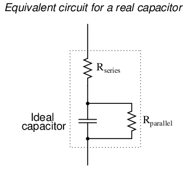
El condensador real tiene resistencia tanto en serie como en paralelo.
Afortunadamente, estas resistencias parásitas suelen tener un impacto modesto (baja resistencia en serie y alta resistencia en paralelo), mucho menos significativas que las resistencias parásitas presentes en un inductor promedio.
Los condensadores electrolíticos, conocidos por su capacitancia relativamente alta y su bajo voltaje de trabajo, también son conocidos por su notoria pérdida, debido tanto a las características de la película dieléctrica microscópicamente delgada como a la pasta electrolítica. A menos que estén especialmente diseñados para servicio de CA, los capacitores electrolíticos nunca deben usarse con CA a menos que estén mezclados (polarizados) con un voltaje de CC constante que evite que el capacitor quede sujeto a voltaje inverso. Incluso entonces, sus características resistivas pueden ser un defecto demasiado grave para la aplicación.
Contributors
Los contribuyentes a este capítulo se enumeran en orden cronológico de sus contribuciones, desde el más reciente hasta el primero. Consulte el Apéndice 2 (Lista de colaboradores) para fechas e información de contacto.
Jason Stark(Junio de 2000): Formato de documentos HTML, que dio lugar a una segunda edición mucho más atractiva.
Lecciones en circuitos eléctricoscopyright (C) 2000-2023 Tony R. Kuphaldt, según los términos y condiciones delCC BY License.